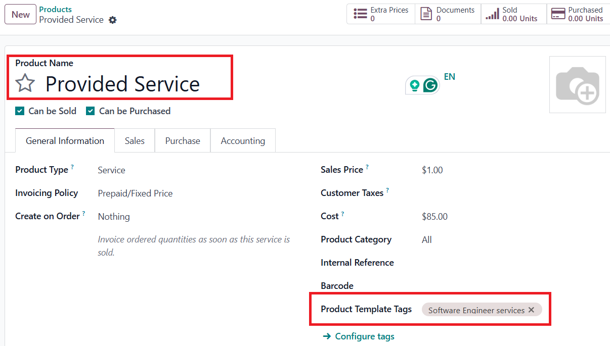
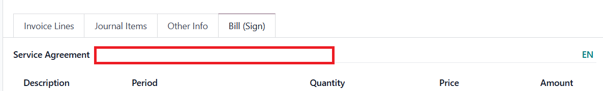
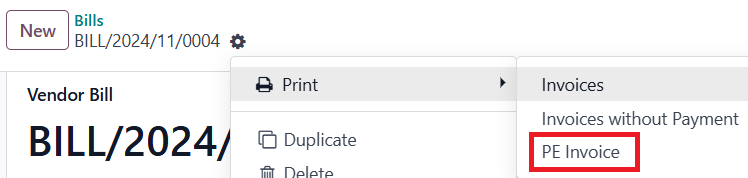

Overview
This module allows you to build a multi-language PE Invoice report out of a Vendor Bill. The default code covers English/Ukrainian PE Invoice.
Note: PE Invoice report structure is built following the existing requirements of Ukrainian law.
Features
- PE Invoice PDF report in Vendor Bill.
- Company-specific Terms and Conditions in PE Invoice report.
- Correlate Product in PE Invoice to follow PE permitted type(s) of activities.
- Translate fields in Res.Partner: Name, Street (1,2), City.
How to work
-
Set up Vendor Contact:
- Fill in Name;
- Fill in the Address info;
- Add Email;
- Add Bank account;
- Set Vendor Language, where English language would lead to a mono language PE Invoice report in English; and Ukrainian language would provide a multi-language English-Ukrainian report;
- If Ukrainian language is set, make sure to add a translation of the following values: Name, Street (1,2), State (if any), City.
-
Set up Company Contact:
- Fill in Name;
- Fill in the Address info;
- Add Email;
- If a multi-language PE Invoice report is supposed to be built, make sure to add a translation of the following values: Name, Street (1,2), State (if any), City;
- Add a translation of the mentioned values in English (if absent).
-
Add specific Terms and Conditions to propagate in PE Invoice report (if any): go to Bill Info section in res.company. Add a translation of the added information.
-
Set up Vendor Product:
- If Product in Vendor Bill doesn't correlate with a permitted activity type supposed to be included in PE Invoice, configure and add a corresponding Product Template tag. Add Product Template tag translation.
Example:

Note: Product in PE Invoice is computed based on Product set in the first line in the Vendor Bill.
-
Add Service Agreement reference in the Vendor Bill: go to Bill (Sign) tab In the Vendor Bill and set the value in Service Agreement field. Add a translation (if needed).

-
Confirm Vendor Bill for the system to compute the data to propagate in PE Invoice report. Print report.
